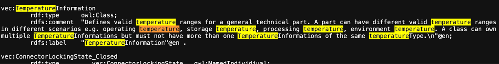

AAS - Designer Manual
TP 12 – „Produktkatalog"


Table of Contents
Getting Started with AAS Designer
Follow the following steps to get started with AAS Designer.
To get started with the AAS Designer, please open the following link: https://designer.aas-suite.com/ . You will then be redirected to the login page.
Login
Once you reach the login screen, you will have several options available, including:
-
Login
-
User Registration
-
Show T&C (This displays the General Terms and Conditions of the AAS Suite, provided by Meta-Level Software AG, along with relevant pricing information.)


##Figure 1‑2: Screenshot of Pricing and Terms in AAS Suite
User registration
Registration can be initiated by clicking on 'Request Registration'. This will redirect to the registration page, where the form to create an account and gain access to the AAS Suite can be filled in. Please make sure to select 'Request Registration' under the 'Topic' field in the form to ensure your request is processed correctly. Once registered, log in and begin using the platform as needed is possible.

Version Information
To view the version number, click on the highlighted profile section at the top right of the page.

You can see that the version number of the software displayed above is 8. This indicates the current version of the AAS Suite you’re using.

By clicking on License Info, you can access additional details such as the License Name, Copyright Information, and the Validity period of your current license.

AAS-Designer Overview
The AAS Suite is a comprehensive platform designed to simplify the creation, validation, and sharing of Asset Administration Shells (AAS) in Industry 4.0 environments. It includes multiple tools such as the AAS Designer, which enables users to create, edit, and validate AAS with ease, and the AAS Marketplace, where AAS can be shared and accessed. Additional tools like the Viewer, Reader, Feed Application, and Compare Tool further enhance AAS management and usability.
The AAS Designer is a user-friendly tool that caters to both beginners and experts. It provides step-by-step guidance for creating administration shells with essential submodels, such as the digital nameplate and handover documentation, while also offering an expert mode for advanced users to efficiently create, validate, and edit AAS. Users can collaborate with their company by sharing AAS through the Designer or publish them on the AAS Marketplace. Also, AAS can be deployed and instantiated into an AAS registry or repository system directly from the Designer. The AAS Designer addresses this challenge by offering automated assistance, a guided workflow, and an expert mode for advanced users, ensuring error-free AAS creation.

The AAS Designer consists of several key components: Dashboard, Shells, Concept Description, Create, IDTA Submodels, Instance Viewer, My Area, and Feed Mapping. Each of these plays a role in the creation and management of Asset Administration Shells. We will explore these components in detail in the upcoming chapters.

AAS-Designer Features
Dashboard
The AAS-Suite provides various sections that help users manage and interact with Asset Administration Shells (AAS), such as the Dashboard:

This section displays key statistics and information about your activities in the AAS Suite:
-
Created AAS: Shows the total number of AAS shells you've created. You can see the overall total, as well as how many were created yesterday and today.
-
Created Users: Displays the number of users who have created AAS shells, with a breakdown of total, yesterday, and today.
-
Published AAS: This shows how many AAS shells have been published, with the same daily breakdown as above.
-
Statistics: Displays statistics about integrated submodels.
Shells

Here you will see an overview of all Asset Administration Shells (AAS) that have already been created within your selected infrastructure. From this view, you can create new AAS instances or edit existing ones.
Concept Description
 All concept descriptions added to various shells are displayed on this page. Each concept description includes the ID, idShort, Definition, and Unit. You can modify or delete any concept description directly from this page.
All concept descriptions added to various shells are displayed on this page. Each concept description includes the ID, idShort, Definition, and Unit. You can modify or delete any concept description directly from this page.
##Figure 3‑3: Concept Description in AAS Suite
This feature is especially helpful in identifying redundancies and unused concept descriptions, those created within shells but not referenced in any semantic descriptions. It enables easier tracking, management, and cleanup of such entries.
Create
 There are several options for creating different types of AAS:
There are several options for creating different types of AAS:
##Figure 3‑4: Choose Type under Create in AAS Suite
Select the type of asset administration shell to create or choose a template.
-
Use Template: If you've created an AAS before, you can use its data (.json, .xml, or .aasx) to create a new one by selecting the file
-
Instance Asset Administration Shells: Create AAS for a specific object, such as an asset with unique data (e.g., serial numbers).
-
Type Asset Administration Shells: These define types of assets and do not include instance-specific data like serial numbers.
-
Unguided New AAS: This option creates an empty Asset Administration Shell instance. Once created, you will be taken directly to the editing mode to begin configuring it.
##Figure 3‑5: Entering asset data under Create
Enter basic information related to the asset and its shell:
-
Asset ID – Unique identifier for the asset
-
Description – Brief overview of the asset or its purpose
-
Asset Thumbnail – Upload or drag-and-drop an image to represent the asset visually
##Figure 3‑6: Entering nameplate data under Create
The IDTA Nameplate contains mandatory identification details based on EU Machinery Directive 2006/42/EC as of IDTA 02006-2-0 Digital Nameplate for Industrial Equipment [1]:
-
Manufacturer
-
Product root
-
Product family
-
Product designation
-
Serial number
-
Year of manufacturing
-
Markings
Manufacturer Information:
Can be selected from the map, a list of recently used addresses, or entered manually:
-
Manufacturer Name
-
Street
-
Postal Code (PLZ)
-
City
-
State
-
Country Code
##Figure 3‑7: Entering Document data under Create
Provide document-related information:
-
Document ID
-
Primary Document? (Yes/No)Postal Code (PLZ)
-
Format (e.g. PDF, DOCX)
-
File Name

##Figure 3‑8: Providing Summary and Confirmation under Create
This final step summarizes the information that were given. When you click 'Save and continue editing', the Asset Administration Shell will be created within the selected infrastructure, and you will be taken to the editing mode where you can add additional submodels.
IDTA Submodels

This section displays available submodels, typically from the Industrial Digital Twin Association (IDTA). The submodels represent different components and aspects of AAS. Some examples of submodels include:
You can integrate these submodels into your AAS depending on the data needs.
My Area

This section contains your profile details and other personal information:
-
Profile: Displays basic user information like First Name, Last Name, Email, and Profile Image (you can update this image by dragging and dropping a new file).
-
Address: Allows you to update your address information.
-
Product Family: This section may show details about the product families you are involved with.
-
Snippet: This is likely where you can add or view small pieces of reusable data.
-
Shared Links: Shows any shared links related to your AAS or other content.
Feed Mapping
Feed Mapping allows you to dynamically create Asset Administration Shells. It enables automated generation of AAS instances based on incoming data feeds, streamlining the integration of external data sources into your infrastructure.
Select AAS Infrastructure
 As shown in Figure 4‑1, the top right side displays a dropdown list of available AAS infrastructures. This list always includes your own infrastructure, which is assigned to your organization. If you have created additional AAS infrastructures within the 'Organization' section, they will also appear in this list.
As shown in Figure 4‑1, the top right side displays a dropdown list of available AAS infrastructures. This list always includes your own infrastructure, which is assigned to your organization. If you have created additional AAS infrastructures within the 'Organization' section, they will also appear in this list.
##Figure 4‑1: List of shells in other servers
To create additional AAS infrastructures or configure your own, you need the appropriate user permissions.
For Admin Users
If you are an Admin, follow these steps to view or modify the server configuration:
-
Navigate to "My Area" and click on the organization.
-
You will see a list of servers along with their status (Active/Inactive), as well as their corresponding registries and repositories.
-
 By pressing "Modify", the entries can be changed.
By pressing "Modify", the entries can be changed.
##Figure 4‑2: Server Configuration for Admin
For Users with Lower Privileges
If you have a lower authority role and lack the necessary permissions, you will not be able to view the server information, as indicated in the below figures.

Operating the Tree Structure
To view the shell's tree structure, you first need to access the shell. Follow the steps below to open and modify it.

To modify a shell, follow these steps:
-
In the Shells Overview, click on the three-dot menu on the left side of the shell.
-
Select "Modify" from the dropdown menu.
-
You will now be redirected to the editing mode of the selected shell. This mode is divided into two main sections:
-
A tree view of the Asset Administration Shell (left side)
-
An editing panel for the selected information from the tree structure (right side)
-
Using the tree view, you can manage the following components:
-
Submodels
-
Elements
-
Files
-
Concept Descriptions
Refer to the figure below for a visual representation of the tree structure.

As you click on the arrow to the left of any submodel, such as HandoverDocumentation, a nested structure will expand beneath it. This reveals additional elements contained within the submodel. Referring to the figure below, you will see the corresponding properties of the submodel. These properties can be modified as needed, allowing you to update existing values or add new properties to the submodel.

The AAS Shell of a component follows a structured tree hierarchy, which can be modified by the user based on the available information. For example, in the figure above, KOSTAL_DLK12_10002210 represents a component whose AAS needs to be identified. Under this component, there are multiple submodels, such as HandoverDocumentation [2], TechnicalData [3], DigitalNameplate [1], MCAD and AasDesignerChangelog.
Within every tree structure, one will find two common elements: Concept Description and Files. The AAS can define its own dictionary, which contains semantic definitions of its submodel elements. These semantic definitions are known as Concept Descriptions (ConceptDescription). The Files section contains all documents and files uploaded to the AAS Shell of the component, ensuring that relevant information is easily accessible and well-organized.
The AAS Designer presents a tree structure that visually organizes different components of an Asset Administration Shell (AAS). This hierarchical representation includes elements such as Submodels, Properties, Property Values, and Concept Descriptions.
Inserting elements
For example, in the AAS Designer's directory tree, you may encounter elements like:

To get a better view of the elements and their functionality, refer the following table:
| Element Name | Description |
|---|---|
Blob |
A data element representing a file that is contained in the value attribute with its source code. |
ContactInformation |
This element is actually a submodel,but can also be used as a collection. |
Entity |
A submodel element used to model self-managed or co-managed entities. |
File |
A data element that represents an address to a file (a locator). The value is a URI that can represent an absolute or relative path. |
MultilanguageProperty |
A property data element that has a single value (can support multiple languages). |
Operation |
A submodel element with input and output variables. |
Property |
A data element that has a single value. |
Range |
A data element that defines a range with minimum and maximum values. |
ReferenceElement |
A data element that defines a logical reference to another element within the same or another Asset Administration Shell or to an external object/entity. |
RelationshipElement |
Used to define a relationship between two elements—either referable (model reference) or external (external reference). |
SubmodelElementList |
An ordered list of submodel elements. |
SubmodelElementCollection |
A logical encapsulation (struct) of multiple named values. |
Submodels (SM): HandoverDocumentation [2], TechnicalData [3], DigitalNameplate [1], etc.
-
Submodel Element Collections (SMC)
-
Properties (Prop): specification, data_sheet
-
Property Value: It is a reference to the global ID of a coded value. It is unique in nature. Concept Descriptions (CD) are supported, allowing the generation of semantic references that define standardized meanings for properties.
-
The value of Property/value must match the referenced coded value in property/valueId if both a property/value and a property/valueId exist.
-
[_Toc193098548 .anchor]#Operating the Elements in AAS
As previously mentioned, there are various types of elements available and selectable based on our requirements in AAS Designer.
This chapter provides definitions for some of the most important elements in AAS.
-
Property: A property is a data element that possesses a single value. (For example, properties with specific values such as WireDiameter.)
-
Range: A range data element defines a range with a minimum and maximum value. (For example, TemperatureRange.)
-
SubmodelElementList: A submodel element list is an ordered list of submodel elements. (TechnicalData, DigitalNameplate.)
-
SubmodelElementCollection: A relationship element is utilized to establish a connection between two elements, which can be either referable (model reference) or external (external reference).
To insert a new element, click on the three-dot menu on the left side of the SubModel. From the dropdown menu that appears, select the "Add" option. Then select in the following dropdown menu "Elements". You will then see a list of all available elements, such as range, property, and more. Now you can choose one element and it will be added to the tree hierarchy.

##Figure 5‑5: Three dot menu in the tree hierarchy
[Toc201556977 .anchor]# _Figure 5‑6: Adding new elements
_Figure 5‑6: Adding new elements
[Toc201556978 .anchor]#_Figure 5‑7: Options of Elements

[Toc201556979 .anchor]#_Figure 5‑8: Adding new Element
Property
A property can be defined in detail with semantic reference, unit definition and other value specific definitions (i.e. tolerance range) via Concept Description (CD), Embedded Data Definition (EDD) and Qualifiers.
In the below figure, CONNECT_TERMINAL_SIZE is the property. Follow the same steps as above.

CD is used to provide a standardized semantic reference for a property, ensuring clarity and interoperability across different systems. It defines the meaning and context of the property within an asset administration shell.
EDD specifies additional characteristics of a property, such as data type, value range, or constraints. It is useful when an external reference is not available or needed for defining detailed attributes.
Qualifiers provide contextual information about a property, such as accuracy, validity period, or measurement conditions. They help refine the meaning and usage of a property without altering its core definition.

As an example in this document, the following JSON example shall be modelled accordingly in the AAS-Designer:
{
"idShort": "overallLength",
"description": [
{
"language": "en",
"text": "Specifies the overall length of the terminal (see diagram \"Terminal Dimensions\"). Specifies the value of the numerical value and the tolerance range. The values of the limits of the tolerance, lowerBoundary and upperBoundary, shall be interpreted as \"modifiers\" to the actual value. To obtain an absolute range of valid values, the values of boundaries shall be added to the actual value, regardless of the Upper or Lower prefix. For example, to define a value of 100mm with a tolerated variation between 14.7mm and 15.3mm, the definition would be Value = 15 mm, LowerBoundary=-0.3, UpperBoundary=+0.3. The Unit of the tolerance boundaries shall always the same as in the defining context."
}
],
"qualifiers": [
{
"kind": "ConceptQualifier",
"type": "lowerBoundary",
"valueType": "xs:double",
"value": "-0.3"
},
{
"kind": "ConceptQualifier",
"type": "upperBoundary",
"valueType": "xs:double",
"value": "+0.3"
}
],
"embeddedDataSpecifications": [
{
"dataSpecificationContent": {
"preferredName": [
{
"language": "en",
"text": "millimeter"
}
],
"shortName": [
{
"language": "en",
"text": "mm"
}
],
"unit": "Millimetre",
"unitId": {
"type": "ExternalReference",
"referredSemanticId": {
"type": "ExternalReference",
"keys": [
{
"type": "GlobalReference",
"value": "https://cdd.iec.ch/cdd/iec62720/iec62720.nsf/Units/0112-2---62720%23UAB072"
}
]
},
"keys": [
{
"type": "GlobalReference",
"value": "0112/2///62720#UAA862"
}
]
},
"sourceOfDefinition": "https://qudt.org/2.1/vocab/unit#MilliM",
"symbol": "mm",
"dataType": "REAL_MEASURE",
"definition": [
{
"language": "",
"text": "SI base unit ampere divided by the 0.001-fold of the SI base unit metre"
}
],
"modelType": "DataSpecificationIec61360"
},
"dataSpecification": {
"type": "ExternalReference",
"keys": [
{
"type": "GlobalReference",
"value": "http://admin-shell.io/DataSpecificationTemplates/DataSpecificationIEC61360/3/0"
}
]
}
}
],
"valueType": "xs:double",
"value": "15",
"modelType": "Property"
}
"Details"
The Property definition begins in the "Details" section, where the name of the property is assigned in the idShort. In addition, a language-dependent short description and a display name of the respective property can be described. If present, please make sure that at least an english version is present. In the datatype section, NULL or CONSTANT is usually specified for type definitions. The choice of ID Short varies from company to company, but generally they follow the naming of the property. For eg. For the family DLK 1,2 which happens to be the terminal family, the id short used could be terminal_family or contact_family. ID-short of Referables shall only feature letters, digits, underscore (``_``); starting mandatory with a letter. *I.e.* ``[a-zA-Z][a-zA-Z0-9_]*``.

[Toc201556982 .anchor]#_Figure 5‑11: Details section area
"Content"
In the "Content" section a nominal value can be assigned. If available, valueId can be filled in with a semantic reference to a value definition (e.g. https://cdd.iec.ch/cdd/iec61360/iec61360.nsf/TerminologiesAllVersions/0112-2---61360_4%23AUA1F0).

[Toc201556983 .anchor]#_Figure 5‑12: Content section area
"Semantic Description"
Next up the semantic ID can be added. If indirect referencing is desired, a so called "Concept Description" (CD) must be additionally created. Otherwise in the case of direct referencing to an external reference, the semantic ID is sufficient.
[Toc201556984 .anchor]# _Figure 5‑13: Semantic description area
_Figure 5‑13: Semantic description area
This contrasts with the "Qualifiers" and "Data Definitions", which are directly embedded in the local property definition.
Any Property in an AAS that has its definition source in an outside system that can be referenced, should be referenced. Properties defined in IDTA templates usually come with semantic reference information pointing to ECLASS and/or IEC. Such semantic references should not be changed. When a proprietary property is created in an AAS, it is recommended to also attach semantic references to them and create its id with the potential capability to be used as a reference by others.
Sometimes even property values are defined in semantic reference systems and should therefore be used and tagged with reference information in the associated ValueId. Typical examples are color codes, IP codes etc. which are defined in several reference systems like ECLASS and IEC.
In the below figure, 'DocumentId' is the property value. Follow the same steps as above.

"Qualifier"
Qualifiers in Asset Administration Shell (AAS) provide additional metadata about elements, acting as type-value pairs that define properties related to value, semantics, or existence.
Additional definitions for a property can be done via the "Qualifier" concept, i.e. definition of Upper- and Lower-Boundaries as shown below:

[Toc201556986 .anchor]#_Figure 5‑15: Qualifier area
Qualifiers in Asset Administration Shell (AAS) provide additional metadata about elements, acting as type-value pairs that define properties related to value, semantics, or existence.
There are three main types: ValueQualifier, which describes how a value was determined (e.g., "measured" or "substitute value" for temperature); ConceptQualifier, which differentiates semantically similar elements based on lifecycle stages (e.g., "as planned" vs. "as maintained" for a Bill of Material); and TemplateQualifier, which defines whether a submodel element is "mandatory" or "optional." Constraints ensure consistency, such as AASd-006, which requires a qualifier's value and valueId to be identical if both are present, and AASd-020, which enforces data type consistency. In terms of referencing, AAS elements can be identifiable (globally unique ID), referable (having an idShort within a namespace), or neither (such as qualifiers, which are attributes). A referable element’s namespace is determined by its parent, ensuring structured relationships, such as a submodel serving as the namespace for its contained properties.
Definitions from the AASXPE can be found here: https://github.com/admin-shell-io/aasx-package-explorer/blob/main/src/AasxPackageExplorer/qualifier-presets.json
"Data Definition"
Arbitrary embedded data definitions can be added that use the same IEC61360 data structure as used for Concept Descriptions. and was initially designed to describe an IEC-CDD reference. But it can also be used for referencing other systems or definition purposes, such as to define a unit definition and/or a range of preset values (enums).
A typical usage would be for an embedded unit definition can be done as shown below.

[Toc201556987 .anchor]#_Figure 5‑16: Data definition area
The embedded data definitions use the same IEC61360 data structure as used for Concept Descriptions and was initially designed to describe an IEC-CDD reference. But it can also be used for referencing other systems or definition purposes, such as to define a range of preset values (enums).
A typical usage would be for an embedded unit definition can be done as shown below.

[Toc201556988 .anchor]#_Figure 5‑17: Example of a filled in Data definition
In the beginning of the Data definition, you can choose between the Type ModelReference and ExternalReference. A ReferenceID can be included in the following. In the Data definition you can assign a Preference name in different languages. You can give the definition a name in the "Preferred Name" Section. To shorten it up you can give the Preferred Name in "Short Name". In the Definition Section you can describe it in a short sentence. To give a reference for the definition you can fill in the "Source of Definition". The most important feature in the Data definition is the Value List. In the Value List you can Insert a List of entities pertaining to the selected element.
Range
In the following all the important definitions will be explained which are necessary for a Range. The only difference compared to Property is the area of Content.
In the "Content" part you can now select Datatype from a dropdown List, which will open when you click on the bar at the Datatype. You can also define a Range from Minimum and Maximum.

[Toc201556989 .anchor]#_Figure 5‑18: Content part of Range
SubmodelElementList
This section will explain how to insert a SubmodelElementList and which features it contains. A SubmodelElementList is a structural element in the Asset Administration Shell (AAS) that organizes multiple submodel elements in a structured and ordered manner. It is particularly useful for handling sets, lists, arrays, and ordered collections of elements with the same semantic meaning.
Unlike a SubmodelElementCollection, which allows heterogeneous elements, a SubmodelElementList enforces semantic and type consistency among its elements.
Common use cases include:
-
Representing multi-dimensional arrays (e.g., a 2D table of values).
-
Storing repeated elements that follow a predefined format (e.g., lists of technical specifications).
-
Grouping structured information, such as a series of sensor readings over time.
The SubmodelElementList inherits the basic definition structure from Property, including idShort, description, and display name. It includes a specific attribute called 'Order Relevant' which Indicates whether the order of elements in the list is semantically meaningful.
The semantic description of a SubmodelElementList is defined using Concept Descriptions (CDs), as outlined in the Property section.
Any IDTA submodel template comes with a semantic reference on its own which should not be changed. When a proprietary submodel is created, it is recommended to also create a dedicated submodel template id with the potential capability to be used as a reference by others.
In the below figure, as discussed earlier IDTA's HandoverDocumentation is the Submodel.

To add semantic reference to HandoverDocumentation, follow the following steps:
-
Either search for an existing description in the repository, but in our case there is no description available so let's create a new description.

-
Add the relevant ECLASS/IEC/IRDI/VEC ID to the ID placeholder.
-
Click Save

The Qualifier of SubmodelElementList is defined using Qualifer under Property for how constraints (e.g., upper/lower bounds) can be applied to list elements.
The Data Definition of SubmodelElementList is defined using Data Definition as outlined in the Property section.
SubmodelElementCollection
In the following all the important definitions will be explained which are necessary for a SubmodellElementCollection. A SubmodelElementCollection (SMC) is a structural element used within the Asset Administration Shell (AAS) to organize and manage multiple related SubmodelElements. Unlike a SubmodelElementList, which primarily deals with ordered and homogeneous elements, a SubmodelElementCollection serves as a container for heterogeneous elements with a predefined semantic structure. It is particularly useful when defining complex assets that consist of multiple distinct properties grouped under a common semantic meaning. Each property within the collection should have a clearly defined semantic representation, referenced by its semanticId.
For example, a document may have properties such as title, version, author, and date, all of which belong together. A single document is therefore represented as a SubmodelElementCollection. If there are multiple documents, they may be stored in a SubmodelElementList containing multiple SubmodelElementCollections.
A SubModellCollection is used for a kind of structure which includes the connection of multiple named values. The elements which you can fill in in the SubmodellElementCollection are the same as explained in the Property Topic. The only difference is the Content part. In the Content Part you will See a listing of the Values which are created in the SubModelList. In the following picture is an example for how the listing will look like. It allows for organizing related elements into a logical collection while maintaining their individual properties and semantics.

[Toc201556993 .anchor]#_Figure 5‑22: Example of a listing in the Content part
SMCs are a structuring element to hierarchically group other SMCs and/or properties inside a SM. Sometimes it can make sense to also semantically reference an SMC, especially when the SMC reflects a datamodel that was defined outside the AAS.
SubmodelElementCollection follows the same structural definition as Property for idShort, description, and display name. It also includes 'Category', which indicates whether the collection represents static parameters or runtime variables.
A SubmodelElementCollection refers to Concept Descriptions (CDs) for semantic meaning, consistent with the approach used for Properties.
As described under Property, qualifiers add metadata. Within SubmodelElementCollections, specific qualifiers like Cardinality or Custom Types (Type, Datatype, Value) define collection-specific constraints.
Qualifiers allow additional contextual constraints and metadata for elements within a SubmodelElementCollection.
Custom Qualifiers
-
Type: Defines the specific context of the qualifier.
-
Datatype: Specifies the expected format of the qualifier value.
-
Value: Represents the actual qualifier value.
[Toc201556994 .anchor]# _Figure 5‑23: Custom Qualifier of SubmodelElementCollection
_Figure 5‑23: Custom Qualifier of SubmodelElementCollection
Cardinality
-
Type: Specifies how many elements the collection can contain. Eg. Multiplicity
-
Value: Specifies cardinality constraints. Example: "0..1" (optional element), "1..*" (mandatory and multiple elements).

[Toc201556995 .anchor]#_Figure 5‑24: Cardinality Qualifier of SubmodelElementCollection
The Data Definition of SubmodelElementCollection is defined using Data Definition as outlined in the Property section.
Handling AAS Shells
In the AAS Designer, Shells represent a list of Asset Administration Shells (AAS), which serve as digital representations of physical or virtual assets. Each Shell contains structured information about a specific asset, including its metadata, submodels, and associated files.
Within the Shells section of the AAS Designer, users can:
-
View and manage all created AAS types or instances.
-
Edit and modify existing shells based on updated information.
-
Search and filter shells based on specific criteria.
-
Validate AAS structures to ensure compliance with industry standards.
-
AAS can be shared within your organization, published on the AAS Marketplace, or made available via a public link that can be protected with a password and an expiration date.
Each AAS Shell consists of submodels, such as Technical Data, Digital Nameplate, Handover Documentation, and more, allowing for a modular and flexible approach to structuring asset-related data.


If you click on the three dots on the left side of an AAS component, you will find several options such as View, Modify, Delete, Advanced, Export, and Create Link for sharing. Let's explore each of these options one by one:
View
After clicking the 'View' button, you will be redirected to the detail page of the Asset Administration Shell. This page presents the information in a structured and easy-to-read format. On the left side, you'll find an overview of the component, while the right side displays additional details such as product information, manufacturer data, and other relevant metadata. These details are also accessible on mobile devices, ensuring a consistent experience across platforms.

One can view various details of the submodels by clicking on each of them. In the figure above, you can notice submodels such as HandoverDocumentation, DigitalNameplate, and TechnicalData listed on the left side. When you select any of these submodels, you will be able to explore their specific details.
Additionally, there is an option to view the data added to the AAS in different formats:
-
Formatted View: A user-friendly, structured view for easy reading and understanding of the data.
-
Unformatted View: A simpler, raw view of the data without any layout or styling.
-
JSON View: A machine-readable format, showing the data in JSON (JavaScript Object Notation), which is commonly used for data exchange.
This flexibility allows users to choose the most suitable format depending on their requirements.
Modify
After clicking the 'Modify' button, you will enter the editing mode of the selected Asset Administration Shell. This topic is already addressed earlier in the document (see…).. Overall, it would be helpful to review the structure of the document to avoid redundancy and ensure a clear, streamlined flow of information.
Delete
The menu entry "Delete" allows you to remove the AAS shell from the system. When you use this option, the selected AAS shell and all its associated data will be permanently deleted. Make sure to double-check before confirming the deletion, as this action cannot be undone.

Advanced
There are 2 Advanced Options you can choose from Create Feed Mapping and Duplicate.

Create Feed Mapping
Feed Mapping allows you to dynamically create Asset Administration Shells using external data sources. Selected data fields from sources such as CSV or JSON files are manually linked to specific information elements within the AAS. This enables the structured generation of AAS instances based on incoming data, without the need for manual entry of each shell.

##Figure 6‑6: Creating Feed Mapping in AAS Designer
The structure typically includes the following fields:
-
Field: The name of the field or attribute within the AAS that is being mapped (e.g., KOSTAL_MLK12_32140734113).
-
Type: The type of data expected (e.g., String, Integer, etc.).
-
Mapping Type: This defines how the mapping is performed, such as whether it's a direct Key-Value mapping, or if it follows a specific JSONPath to extract values.
Value / JSONPath: The value or path from the external data source that will be mapped to the field in the AAS (e.g., CSV-FILE or a No file chosen indicator for file upload).
Duplicate
Duplicate helps to duplicate the entire AAS File.
Exports
The file can be downloaded in either. aasx or .json format. In a separate window, you can select the specific submodels you wish to include in the export.


For the case "Export *.aasx", one can choose the serialization format (XML or JSON) and the submodels to be placed in the AASX file.
In the case "Export *.json", a JSON file of the whole AAS will be directly created and downloaded.
Create Link for Sharing

You can create and share a link to an AAS, allowing others to access the shell in view-only mode. This shared link provides read-only access through a publicly available viewer and does not permit any modifications such as creating, updating, or deleting data.

To create the link:
-
Write a message: You can include a custom message to provide context or instructions for the recipient.
-
Set validity: Specify the validity period for the link, such as an expiration date, to control access over time.
-
Add a password: For security, you can set a password that will be required to access the AAS Shell via the link.
Once you press the 'Create Link for Sharing' button, the link will be generated and automatically copied to your clipboard. This feature allows secure and controlled sharing of AAS shells with team members, collaborators, or stakeholders.
Navigating the AAS Shell
ID Validation
The consistent filling and maintenance of IDs in an asset administration shell is an error-prone process, especially if it is carried out manually and no suitable tool support is available. A consistency check has therefore been added to the AAS Designer with the "Validate IDs" feature shows an example of the results of such a check process.

Import from Reference Catalogs
In the context of properties (valueId), value references can be imported from reference catalogs(ECLA:SS,VEC,etc.)

In the context of concept descriptions (unitId / referenceId), units can be imported from reference catalogs (ECLASS, QUDT, SI units):


There are also references to other potentially relevant reference catalogs.

The following shell structure opens up after clicking the "Modify" Button.
##Figure 7‑6: Inside the AAS Shell
Submodel
On the left side of the shell interface, a tree-like structure displaying submodels is presented. Various types of information related to the shell such as technical properties, carbon footprint data, and handover documentation can be added here. One such example is HandoverDocumentation.
Handover Documentation-Wizard
 The AAS Designer now supports the simplified creation of elements in Submodel Handover Documentation:
The AAS Designer now supports the simplified creation of elements in Submodel Handover Documentation:
##Figure 7‑7: Wizard HandoverDocumentation
At the top right corner, three important operations can be performed.
Validate Errors
 It is recommended to validate any errors by clicking on the grey section shown in the figure, which will highlight any issues or inconsistencies that need to be addressed. This validation process ensures that your AAS remains accurate and compliant with standards.
It is recommended to validate any errors by clicking on the grey section shown in the figure, which will highlight any issues or inconsistencies that need to be addressed. This validation process ensures that your AAS remains accurate and compliant with standards.
##Figure 7‑8: Validation Errors in the AAS Designer
As shown in the figure, a list of all issues within the AAS shell is displayed during validation. Each error is clearly identified and can be directly navigated to, allowing users to quickly address the problems.

Once the specific issue is located, the necessary adjustments can be made to resolve the error. The Designer automatically guides the user to the problem area once the button is clicked. This process ensures that the AAS shell is free from issues and fully compliant with the required standards before it is finalized or shared.
Save
After the required changes have been made, they can be saved by clicking the green Save button located at the top right corner of the page.
Delete
The AAS shell can be deleted by clicking the red Delete button.
Reset
 The Reset button, located immediately after the Delete button (as shown in the figure below), can be used to reset all the current changes made within the Designer.
The Reset button, located immediately after the Delete button (as shown in the figure below), can be used to reset all the current changes made within the Designer.
##Figure 7‑10: Reset, Undo, Redo Button in the AAS Shell
Undo
The Undo button is used to revert the most recent change, allowing any unintended modifications to be undone.
Redo
The Redo button is used to reapply a change that was previously undone using the Undo function.
Export Views
As shown in the figure below, the Export options become visible after clicking the three-dot menu. The AAS shell can be exported either as a .aasx or .json file. Also, an option to view the AAS shell in Viewer Mode is available under the View function in the Shells Overview.

Identification Schemas and their Importance
Unique identifiers are required for referencing both an AAS and its Submodels. Unique identifiers are also used to reference external semantic information. The ID schemes described in the following are relevant for the AAS concept.
UUID/GUID
UUID stands for Universally Unique Identifier[1]. It is a 128-bit (16-byte) identifier standardized by the Open Systems Interconnection (OSI) framework and detailed in the RFC 4122 specification. The goal is to generate IDs that are unique across time and space—without needing a central authority to coordinate them. Their uniqueness relies on probability (for V4) or careful design (for V1, V3, V5), making collisions astronomically unlikely—think 1 in 2^122 for random UUIDs.
GUID stands for Globally Unique Identifier and is Microsoft's term, while it is functionally equivalent to a UUID.
Format: A UUID is typically written as a 36-character string in hexadecimal, split into five groups by hyphens: 8-4-4-4-12. For example:
550e8400-e29b-41d4-a716-446655440000
That's 32 hex digits (representing 128 bits) plus 4 hyphens.
Structure: Internally, it's 16 bytes, often broken down into fields like time, clock sequence, and node ID, depending on the version (more on that soon).
Variants: RFC 4122 defines a specific "variant" (bits 64-65 set to 10) to distinguish it from other 128-bit ID schemes. Most UUIDs you encounter follow this.
UUIDs are often generated by AAS-Tools to be used in the AAS- and Submodel-IDs. This might be appropriate in many cases for Instance-AAS, but can become problematic for Type-AAS. Therefore, AAS publishers should make a careful decision regarding the usage of UUIDs.
IRDI (ISO 29005-5)
The International Registration Data Identifier (IRDI) is a global identification system for properties, values, and concepts. It is defined by ISO 29005-5 and ISO/IEC 11179-6 as an established means to create manageable unique identifiers that remain consistent across different languages and IT systems. IRDIs are used in ECLASS, IEC, and ISO standards.

IRDIs are a historically established referencing mechanism that must be dealt with in the AAS. However, as they require external management, it is not recommended to specify new IRDIs for elements in the AAS.
Understand the IEC IRDI Structure
An IEC-CDD follows this general format: ICD/OI/AIICVI
-
ICD (International Code Designator): Identifies the registration authority (e.g., "0112" for IEC).
-
OI (Organization Identifier): Specifies the organization within the authority (e.g., "2" for IEC).
-
AI (Application Identifier): Indicates the specific dictionary or standard (e.g., "61360_4" for IEC 61360-4 DB).
-
IC (Item Code): A unique code for the item within the dictionary (e.g., "AAB123").
-
VI (Version Identifier): Denotes the version of the item (e.g., "001").
Example: 0112/2///61360_4#AAB123#001
| 0112/2///61360_4#AAA032 | |
|---|---|
Code: |
description |
0112/2/ |
Issuing Agency Code (IEC) |
61360_4 |
IEC 61360 Standard Reference |
#AAA032 |
Unique identifier for a property/class |
Understand the ECLASS IRDI Structure
An ECLASS IRDI typically follows this format: ICD/OI/CSICodeVersion
-
ICD (International Code Designator): A code for the registration authority, e.g., "0173" for ECLASS.
-
OI (Organization Identifier): Identifies the organization, often omitted or left empty in ECLASS as it's implicit.
-
CSI (Code Space Identifier): Indicates the type of structural element (e.g., "01" for classification class, "02" for property, "07" for value).
-
Code: A unique identifier for the specific item (e.g., "27-22-01-01" for a class or "AAB123" for a property).
-
Version: A version number (e.g., "001").
Example: 0173-1#01-27-22-01-01#001 (a classification class in ECLASS)
| 0173-1#01-AAA123#001 | |
|---|---|
Code: |
description |
0173 |
ICD code for eCl@ss |
1 |
eCl@ss Office |
01 |
class |
AAA123 |
identifier of class |
001 |
version of class |
URI/IRI
An URI (Uniform Resource Identifier) is a string of characters that identifies a resource, standardized by RFC 3986. It is a concept encompassing anything that can be named or located, whether it's a webpage, a file, or an abstract entity.
Example: http://example.com/resource/123.
Components: Scheme (http), authority (example.com), path (/resource/123), and optionally query (?key=value) or fragment (#section1).
Subtypes: Includes URLs (locators, like http://example.com) and URNs (names, like urn:isbn:0451450523).
An IRI (Internationalized Resource Identifier) is an extension of URI, defined by RFC 3987, that supports non-ASCII characters (e.g., accents, Chinese characters) for global accessibility. IRIs are technically a superset of URIs, thus every URI is an IRI, but not vice versa.
Example: http://exâmple.com/资源/123 encoded by
The AAS needs globally unique, machine-readable, and interoperable identifiers. IRIs fit this role perfectly because they extend URIs (Uniform Resource Identifiers) to support international characters, aligning with Industry 4.0's global scope via the following features:
-
Global Uniqueness: IRIs leverage namespaces (e.g., domain names) to ensure no two assets clash, even across organizations.
-
Internationalization: IRIs allow non-ASCII characters (e.g., http://工厂.cn/设备/123 for a Chinese factory), critical for multinational supply chains.
-
Resolvability: HTTP-based IRIs can point to a resource (e.g., an AAS server), enabling data retrieval.
-
Standardization: IRIs align with web standards (RFC 3987) and Semantic Web practices, making AAS compatible with broader ecosystems like OPC UA or linked data.
In the AAS metamodel specification [1], IRIs are explicitly recommended as the primary type of identifier for both the asset and the AAS itself and offer significant administrative advantages:
Namespace control: the schema and domain) act as a namespace, allowing organizations or systems to define their own identifiers without central coordination.
Extensibility: URIs are flexible, you can add a path, query or fragment to refine the identity.
For use in the AAS, it is recommended to avoid the use of non-ASCII special characters in URIs/IRIs.
Semantic Databases
A semantic reference is a link to an external standard or ontology that defines the meaning of a data element within an AAS. These references ensure interoperability, consistency, and automation across different systems in Industry 4.0.
For Technical Data in Industrial Equipment, a Generic Frame to structure information is required. This means using standardized vocabularies and industry standards to define and link component attributes. A number of Industry Standards for Semantic References exist, i.e.:
-
IEC-CDD: Focuses on electrotechnical and industrial domains, rooted in IEC 61360 standards, and emphasizes machine-to-machine communication and smart manufacturing (e.g., Industry 4.0).
https://cdd.iec.ch/cdd/iec61360/iec61360.nsf/SearchFrameset, https://cdd.iec.ch/cdd/iec61360/iec61360.nsf/TreeFrameset, -
ECLASS: A cross-industry standard with a strong focus on detailed technical properties and classifications, widely used in Europe for engineering and manufacturing. It's highly granular and supports multiple domains. https://eclass.eu/en/eclass-standard/search-content/search
-
ETIM (Electro-Technical Information Model): A standardized classification system primarily for electrical and HVAC products. Focused on technical product data for the electrical, building, and installation sectors. Popular in Europe, especially among manufacturers, wholesalers, and contractors for product data exchange. Similar to ECLASS, it provides classes, features, and values, but it's more specialized for electrotechnical and related industries. It's maintained by the ETIM International organization. https://prod.etim-international.com/class, https://etimapi.etim-international.com/
-
GPC (Global Product Classification): A product classification system developed by GS1 for global trade. Covers consumer goods, industrial products, and services with a focus on retail and trade. Used in conjunction with GS1 standards (e.g., barcodes) for supply chain efficiency. Broad and less technical than ECLASS or IEC-CDD, it's designed for interoperability in global commerce. https://gpc-browser.gs1.org/
-
Electropedia: Online terminology database published by the IEC, contains all the terms and definitions in the International Electrotechnical Vocabulary (IEV) which is published in the IEC 60050 series. Contains more than 22 000 terminological entries in English and French organized by subject area, with equivalent terms in various other languages: Arabic, Chinese, Croatian, Czech, Danish, Dutch, Finnish, German, Italian, Japanese, Korean, Mongolian, Norwegian, Polish, Portuguese, Russian, Serbian, Slovak, Slovenian, Spanish, Swedish, Turkish and Ukrainian (coverage varies by subject area). https://electropedia.org/
-
VEC (Vehicle Electric Container) is an open standard developed under prostep ivip and VDA to describe electrical and electronic systems in vehicles, such as wiring harnesses, components, and connectivity. It’s an XML-based data model but also has an ontology-like structure, a formalized vocabulary with classes, properties, and relationships. Its elements can be referenced via URIs by applying semantic web principles. https://ecad.prostep.org/ontologies/2024/03/vec
IEC-CDD
The International Electrotechnical Commission (IEC) Common Data Dictionary uses the International Registration Data Identifier (IRDI) for referencing properties, classes, and values, ensuring interoperability across industries, digital twins, and supply chains. IEC standards are widely used in industrial automation, power systems, electronics, and manufacturing.
Finding IRDIs in IEC
Step 1: Click on the following link:
Step 2: Select a suitable IEC standard, i.e. „IEC61360-4“:

Step 3: Search the selected tree for the suitable class and/or attribute manually via https://cdd.iec.ch/cdd/iec61360/iec61360.nsf/TreeFrameset or do a text search via https://cdd.iec.ch/cdd/iec61360/iec61360.nsf/SearchFrameset. E.g. if you want to find the IEC-ID for ‘temperature type’ (https://cdd.iec.ch/cdd/iec61360/iec61360.nsf/TU0/0112-2---61360_4%23AAA032), either scroll down the website or you can perform a text search via for the relevant word search. Click the suitable search result you find most accurately suits your search.

Step 4: You will find the IEC IRDI for the selected property:

Adding it to Semantic Description
Step 1: In the AAS Designer, click on the following option in semantic description under a specific subshell:

Step 2: Add IRDI value to the ID and specify the industry standard used.

ECLASS
ECLASS is an internationally recognized classification system that provides a standardized framework for describing products and services in all industries. It ensures that businesses, manufacturers, and suppliers use a common language when exchanging product information, regardless of language, country, or system.
ECLASS ensures consistent identification of product classes and properties across different languages and business ecosystems.
Click on the image below redirects to the website (https://eclass.eu/en/eclass-standard/search-content):

ECLASS elements are structured as follows:
| Code Space Identifier (CSI) | Category of administrated item |
|---|---|
44 |
class |
04 |
property |
01 |
unit of measurement |
01 |
property value |
_Table 3 Excerpt of Code Space Identifiers (CSI) according to ISO 290ß05-5_[4]
Informative Links to online element descriptions can be created as follows:
ECLASS IRDIs are structured as follows:
| Component | Meaning |
|---|---|
0173 |
Issuing agency (ECLASS) |
1 |
ECLASS Office |
02 |
Property (CSI Code) |
BAA456 |
Unique identifier of property |
001 |
Version number |
Table 4 Breakdown of IRDI Example (0173-1#02-BAA456#001)
VEC
The Vehicle Electric Container (VEC)[5] is an example for an industry-standard data model designed for the exchange of electrical system information in the automotive and transportation sectors. It is developed and maintained by ProSTEP iViP, a consortium focused on interoperability in engineering data exchange.
VEC provides a structured format for representing and exchanging electrical wire harness data, including components, connections, signals, geometries, and metadata. Ist role is enabling seamless communication between different Computer-Aided Design (CAD) and Product Lifecycle Management (PLM) systems. VEC is defined in the VDA Recommendation 4968 and ProSTEP iViP Recommendation PSI21, in form of a standardized information model, data dictionary, XML schema, and an ontology in “https://www.w3.org/TR/turtle/#sec-iri-references[RDF 1.1 Turtle]” syntax is provided at https://ecad-wiki.prostep.org/specifications/vec/v210/vec-2.1.0-ontology.ttl, which can be utilized in the AAS as follows:
-
Step 1: Go to the website link: https://ecad-wiki.prostep.org/specifications/vec/v210/vec-2.1.0-ontology.ttl
-
Step 2: Press Ctrl+F and search for the result you need. For eg. you are searching for information on temperature, you can search for “temperature”.
-
Step 3: One of the result is shown below. So the relevant vec for my search is vec:TemperatureInformation.
##Figure 9‑7: Searching for Temperature Information in the VEC Model
To be used inside the AAS, a AAS-suitable ID formation must be defined, e.g. in the form of IRIs (Internationalized Resource Identifier):
Reference examples to class definitions:
Reference examples for value in enumeration:
http://www.prostep.org/ontologies/ecad/2024/03/vec#PrimaryPartType_PluggableTerminal
http://www.prostep.org/ontologies/ecad/2024/03/vec#TemperatureType_AmbientTemperature
Reference examples on Properties:
NumericalValue (VEC) as a Property (AAS)
Variant 1: Define Unit in Concept Description

Problem:
-
The unit (e.g. in m, mm, inches) is defined globally for the referenced VEC property for all AASes on the AAS server.
-
When another unit format comes from a native source, it may be necessary to convert with rounding errors.
Variant 2: Create a concept description for each unit-property combination, e.g.
vec#thickness_m
vec#thickness_mm
vec#thickness_inches
Problems: Semantic reference between the CDs and the VEC specification would be lost.
Variant 3: Define unit for each property in the embedded data specification

Mapping of predefined values from reference systems
VEC provides limited semantic definitions in some aspects. It can therefore be useful to combine other established reference systems. These often define attributes for dedicated topics such as colors, materials, protection classes, as for example in IEC-CDD:
| Applicable properties: | Enumeration code list: |
|---|---|
0112/2///61360_4#AAF250 - insulation colour code |
N.A., BK, BN, RD, OG, GN, YE, BU, VT, GY, WH, PK, GD, TQ, SR, GNYE, BKBN, BKRD, BKOG, BKGN, BKVT, BKGY, BKWH, BKPK, BKGD, BKTQ, BKSR, BRRD, BROG, BRBU, BRVT, BRGY, BRWH, BRPK, BRGD, BRTK, BRSR, RDOG, RDBU, RDVT, RDGY, RDWH, RDPK, RDGD, RDTQ, RDSR, OGBU, OGVT, OGGY, OGWH, OGPK, OGGD, OGTQ, OGSR, BUVT, BUGY, BUWH, BUPK, BUGD, BUTQ, BUSR, VTGY, VTWH, VTPK, VTGD, VTTQ, VTSR, GYWH, GYPK, GYGD, GYTQ, GYSR, WHPK, WHGD, WHTQ, WHSR, PKGD, PKTQ, PKSR, GDTQ, GDSR, TQSR, OTHERS |
BG, BK, BL, BN, BZ, GN, GY, IV, NC, OR, PK, RD, TN, VT, WT, YL |
|
BRAID, BUNCH, LITZ, SOLID, STRAND, TINSEL |
|
DUSTP, OPEN, SEAL |
|
CER, GLS, PLA |
|
ECTFE, ENAM, E/TFE, FEP, PA, PAPER, PE, PFA, POLY, PP, PTFE, PUR, PVC, RUBBER, TEXTILE, UP |
|
Al, Cu, CuCd, CuCdCr, CuCr, CuNi, CuSn, CuZn, Fe/Cu |
|
Ag, Ni, Sn |
|
Ag, AgCdO, AgCdO/Au, AgNi, AgNi/Au, AgPd, AgPd/Au, AgSnO2, AgSnO2/Au, AgW, Ag/Au, AuAg, PdCu, PdNi, Rh, Rh/Au, W |
|
BeCu, Cu, CuSn, CuZn, Ni, PCuSn |
|
Ag, Au, CuZn, Ni, PCuSn, Pd, Sn, Zn |
|
CER, DAP, MET, PA, PC, PLA, PPOX, PTFE |
|
Ag, Au, Cr, ELOX, LAC, Ni, PLA, RAW, RUB, Sn, Zn |
|
AgPd, NiSn |
|
Ag, Au, Cr, Ni, Pd, RAW, Sn |
|
0112/2///61360_4#AAH011 - designation of IP protection |
IP00, IP01, IP02, IP03, IP04, IP05, IP06, IP07, IP08, IP10, IP11, IP12, IP13, IP14, IP15, IP16, IP17, IP18, IP20, IP21, IP22, IP23, IP24, IP25, IP26, IP27, IP28, IP30, IP31, IP32, IP33, IP34, IP35, IP36, IP37, IP38, IP40, IP41, IP42, IP43, IP44, IP45, IP46, IP47, IP48, IP50, IP51, IP52, IP53, IP54, IP55, IP56, IP57, IP58, IP60, IP61, IP62, IP63, IP64, IP65, IP66, IP67, IP68, IP69, IPX1, IPX2, IPX3, IPX4, IPX5, IPX6, IPX7, IPX8, IP1X, IP2X, IP3X, IP4X, IP5X, IP6X |


Concept Description
An Asset Administration Shell (AAS) can have its own dictionary of sematic references where it defines the meanings of different elements inside it. These elements are called Concept Descriptions. A Concept Description (CD) in the context of the Asset Administration Shell (AAS) defines the semantic meaning of the elements within its submodels. A CD utilizes basically the same elements.
The semanticId links the submodel elements to the corresponding semantic definitions, which are referenced via the HasDictionaryEntry relation. Also the concept description can include Add-Ins, allowing the use of IEC61360 data specification templates, which standardize how asset-related data, like units or value ranges, is represented. The concept descriptions help clarify the meaning of data, ensuring accurate interpretation across systems.
In the figure below, ‘AcademicTitle’ is the property value. Follow the same steps as above.

Literaturverzeichnis
| [1] | Industrial Digital Twin Association e.V., "IDTA 02006-2-0 Digital Nameplate for Industrial Equipment," October 2022. [Online]. Available: https://github.com/admin-shell-io/submodel-templates/tree/main/published/Digital%20nameplate/2/0. |
|---|---|
[2] |
Industrial Digital Twin Association e.V., "IDTA 02004-1-2 Handover Documentation," March 2023. [Online]. Available: https://github.com/admin-shell-io/submodel-templates/tree/main/published/Handover%20Documentation/1/2. |
[3] |
Industrial Digital Twin Association e.V., "IDTA 02003-1-2 Generic Frame for Technical Data for Industrial Equipment in Manufacturing," August 2022. [Online]. Available: https://github.com/admin-shell-io/submodel-templates/tree/main/published/Technical_Data/1/2. |
[4] |
"prostep ivip," prostep ivip e.V., [Online]. Available: https://www.prostep.org/. |
[5] |
J. Becker, "Whitepaper KBL vs. VEC - Similarities and differences - briefy and concisely summarized," 16 December 2022. [Online]. Available: https://ecad-wiki.prostep.org/post/kbl-vs-vec/. |
[6] |
OPC Foundation, "OPC 40001-3: Machinery Job Mgmt," OPC Foundation, [Online]. Available: https://reference.opcfoundation.org/Machinery/Jobs/v100/docs/. |
[7] |
OPC Foundation, "OPC 40001-101: Machinery Result Transfer," [Online]. Available: https://reference.opcfoundation.org/Machinery/Result/v100/docs/. |
[8] |
Platform Industrie 4.0, "RAMI 4.0: Ein Referenzarchitekturmodell als Kommunikationsgrundlage in der Industrie 4.0," 11 04 2022. [Online]. Available: https://www.dke.de/de/arbeitsfelder/industry/rami40. |
[9] |
OPC Foundation, "OPC 40570: OPC UA for the Wire Harness Manufacturing Industry," https://profiles.opcfoundation.org/workinggroup/88, WiP. [Online]. Available: https://profiles.opcfoundation.org/document/214. |
[10] |
IEC, "IEC 61360-4 - IEC/SC 3D - Common Data Dictionary," [Online]. Available: https://cdd.iec.ch/cdd/iec61360/iec61360.nsf/TreeFrameset?OpenFrameSet. |
[11] |
ECLASS e.V., "ECLASS-Standard," [Online]. Available: https://eclass.eu/eclass-standard/content-suche/search. |
[12] |
Prostep ivip, "Harness Description List (KBL)," prostep ivip, 26 Jun 2022. [Online]. Available: https://ecad-wiki.prostep.org/specifications/kbl/. |
[13] |
Prostep ivip, "Vehicle Electric Container (VEC)," prostep ivip, 8 Jan 2024. [Online]. Available: https://ecad-wiki.prostep.org/specifications/vec/v210/. |
[14] |
OPC Foundation, "OPC UA Online Reference - Released Specifications," 2024. [Online]. Available: https://reference.opcfoundation.org/. |
[15] |
"Verband der Automobilindustrie (VDA)," [Online]. Available: https://www.vda.de/de. |
[16] |
"DIN 72036:2024-06 Straßenfahrzeuge - Automatisierung der Leitungssatzfertigung," DIN-Normenausschuss Auto und Mobilität, 06 2024. [Online]. Available: https://dx.doi.org/10.31030/3521962. |
[17] |
Prostep ivip, "VEC Release Notes - Version 2.1.0," prostep ivip, 08 01 2024. [Online]. Available: https://ecad-wiki.prostep.org/specifications/vec/v210/release-notes/. |
[18] |
OPC Foundation, "OPC UA Nodesets," [Online]. Available: https://github.com/OPCFoundation/UA-Nodeset. |
[19] |
"VWS4LS-Github," ARENA2036 e.V., [Online]. Available: https://github.com/VWS4LS. |
[20] |
IEC, "DIN EN IEC 61406-2 Identifizierungslink Teil 2: Typen/Modelle, Lose/Chargen, Artikel und Merkmale," 12 2024. [Online]. Available: https://www.vde-verlag.de/normen/0800994/din-en-iec-61406-2-vde-0810-407-2024-12.html. |
[21] |
IEC, "DIN EN IEC 61406-1 Identifizierungslink Teil 1: Allgemeine Anforderungen," 12 2023. [Online]. Available: https://www.vde-verlag.de/normen/0800916/din-en-iec-61406-1-vde-0810-406-1-2023-12.html. |
[22] |
Wikipedia, "ETL-Prozess," 2024. [Online]. Available: https://de.wikipedia.org/wiki/ETL-Prozess. |
[23] |
Wikipedia, "Digitaler Zwilling," 2024. [Online]. Available: https://de.wikipedia.org/wiki/Digitaler_Zwilling. |
[24] |
Industrial Digital Twin Association e.V., "IDTA 02056-1-0 Data Retention Policies," June 2024. [Online]. Available: https://industrialdigitaltwin.org/wp-content/uploads/2024/06/IDTA-02056-1-0_Submodel_Data-Retention-Policies.pdf. |
[25] |
Industrial Digital Twin Association e.V., "IDTA 02051 Purchase Request Notification," (WiP). [Online]. Available: https://interopera.de/wp-content/uploads/2024/02/231113-Abschlusspraesentation-InterOpera-Purchase-Teilmodelle-Liedl.pdf. |
[26] |
Industrial Digital Twin Association e.V., "IDTA 02048 Predictive Maintenance," (WiP). [Online]. Available: https://interopera.de/wp-content/uploads/2023/07/230705-Predictive-Maintenance-Abschlusspraesentation.pdf. |
[27] |
Industrial Digital Twin Association e.V., "IDTA 02031-1-0 Bill of Process," (WiP). [Online]. Available: https://industrialdigitaltwin.org/content-hub/teilmodelle. |
[28] |
Industrial Digital Twin Association e.V., "IDTA 02026-1-0 Provision of 3D Models," June 2024. [Online]. Available: https://github.com/admin-shell-io/submodel-templates/tree/main/published/Provision%20of%203D%20Models/1/0. |
[29] |
Industrial Digital Twin Association e.V., "IDTA 02020-1-0 Capability Description," (WiP). [Online]. Available: https://industrialdigitaltwin.org/content-hub/teilmodelle. |
[30] |
Industrial Digital Twin Association e.V., "IDTA 02017-1-0 Asset Interfaces Description," January 2024. [Online]. Available: https://github.com/admin-shell-io/submodel-templates/tree/main/published/Asset%20Interfaces%20Description/1/0. |
[31] |
Industrial Digital Twin Association e.V., "IDTA 02011-1-1 Hierarchical Structures enabling Bills of Material," 2024 June. [Online]. Available: https://github.com/admin-shell-io/submodel-templates/tree/main/published/Hierarchical%20Structures%20enabling%20Bills%20of%20Material/1/1. |
[32] |
Industrial Digital Twin Association e.V., "IDTA 02010-1-0 Service Request Notification," October, 2023. [Online]. Available: https://github.com/admin-shell-io/submodel-templates/tree/main/published/Service%20Request%20Notification/1/0. |
[33] |
Industrial Digital Twin Association e.V., "IDTA 02008-1-1 Time Series Data," 2023. [Online]. Available: https://github.com/admin-shell-io/submodel-templates/tree/main/published/Time%20Series%20Data/1/1. |
[34] |
Industrial Digital Twin Association e.V., "IDTA 02005-1-0 Provision of Simulation Models," December 2022. [Online]. Available: https://github.com/admin-shell-io/submodel-templates/tree/main/published/Provision of Simulation Models/1/0. |
[35] |
Industrial Digital Twin Association e.V., "IDTA 02002-1-0 Submodel for Contact Information," May 2022. [Online]. Available: https://github.com/admin-shell-io/submodel-templates/tree/main/published/Contact%20Information/1. |
[36] |
Industrial Digital Twin Association e.V., "IDTA 01005-3-0-1: Specification of the Asset Administration Shell Part 5: Package File Format (AASX)," 2024. [Online]. Available: https://admin-shell-io.github.io/aas-specs-antora/IDTA-01005/v3.0.1/index.html. |
[37] |
Industrial Digital Twin Association e.V., "IDTA 01001-3-0-1: Specification of the Asset Administration Shell Part 1: Metamodel," June 2024. [Online]. Available: https://admin-shell-io.github.io/aas-specs-antora/IDTA-01001/v3.0.1/index.html. |
[38] |
ARENA2036 e.V., "VWS4LS-Github," [Online]. Available: https://github.com/VWS4LS. |
[39] |
Plattform Industrie 4.0, "Verwaltungsschale in der Praxis," 2021. [Online]. Available: https://industrialdigitaltwin.org/wp-content/uploads/2021/09/08_verwaltungsschale_in_der_praxis_de_2020.pdf. |
[40] |
Plattform Industrie 4.0, "Vertrauensinfrastrukturen," 03 2021. [Online]. Available: https://www.plattform-i40.de/IP/Redaktion/DE/Downloads/Publikation/Vertrauensinfrastrukturen.pdf. |
[41] |
Prostep ivip e.V., "Vehicle Electric Container (VEC)," 8 Jan 2024. [Online]. Available: https://ecad-wiki.prostep.org/specifications/vec/v210/. |
[42] |
Prostep ivip e.V., "VEC Release Notes - Version 2.1.0," 08 01 2024. [Online]. Available: https://ecad-wiki.prostep.org/specifications/vec/v210/release-notes/. |
[43] |
VDI/VDE, "VDI/VDE 2193 Blatt 2 - Sprache für I4.0-Komponenten - Interaktionsprotokoll für Ausschreibungsverfahren," 2020. [Online]. Available: https://www.vdi.de/richtlinien/details/vdivde-2193-blatt-2-sprache-fuer-i40-komponenten-interaktionsprotokoll-fuer-ausschreibungsverfahren. |
[44] |
VDI/VDE, "VDI/VDE 2193 Blatt 1 - Sprache für I4.0-Komponenten - Struktur von Nachrichten," 2020. [Online]. Available: https://www.vdi.de/richtlinien/details/vdivde-2193-blatt-1-sprache-fuer-i40-komponenten-struktur-von-nachrichten. |
[45] |
ECLASS e.V., "Technical Specification Conceptual Data Model," 2020. [Online]. Available: https://eclass.eu/fileadmin/Redaktion/pdf-Dateien/Wiki/ECLASS_Technical-Specification_11_Conceptual-Data-Model_v_1.0.pdf. |
[46] |
Wikipedia, "Single Point of Truth," [Online]. Available: https://de.wikipedia.org/wiki/Single_Point_of_Truth. |
[47] |
Industrial Digital Twin Association e.V., "Registrierte IDTA Submodelle," [Online]. Available: https://industrialdigitaltwin.org/en/content-hub/submodels. |
[48] |
"Prostep ivip e.V.," [Online]. Available: https://www.prostep.org/. |
[49] |
"OPC UA Online Reference - Released Specifications," 2024. [Online]. Available: https://reference.opcfoundation.org/. |
[50] |
KEBA, "OPC UA – der zentrale Standard für Industrie 4.0 im Überblick," [Online]. Available: https://www.keba.com/de/news/industrial-automation/ueberblick-opc-ua-zentraler-standard-industrie-4-0. |
[51] |
OPC Foundation, "OPC 40570: OPC UA for the Wire Harness Manufacturing Industry," https://profiles.opcfoundation.org/workinggroup/88, WiP. [Online]. Available: https://profiles.opcfoundation.org/document/214. |
[52] |
OPC Foundation, "OPC 30270: Industry 4.0 Asset Administration Shell," [Online]. Available: https://reference.opcfoundation.org/I4AAS/v100/docs/. |
[53] |
OPC Foundation, "OPC 10031-4: ISA-95-4 Job Control," [Online]. Available: https://reference.opcfoundation.org/ISA95JOBCONTROL/v200/docs/. |
[54] |
OPC Foundation, "OPC 10000-210: Industrial automation - Relative Spatial Location," 2023. [Online]. Available: https://reference.opcfoundation.org/RSL/v100/docs/. |
[55] |
VDI 2860, "Montage- und Handhabungstechnik; Handhabungsfunktionen, Handhabungseinrichtungen; Begriffe, Definitionen, Symbole," Beuth Verlag, Berlin, 1990. |
[56] |
ISO, "ISO/IEC 27002:2022-02: Information security, cybersecurity and privacy protection - Information security controls," 2022. [Online]. Available: https://www.iso.org/standard/75652.html. |
[57] |
ISO, "ISO/IEC 27001:2022 Information security, cybersecurity and privacy protection — Information security management systems — Requirements," [Online]. Available: https://www.iso.org/standard/27001. |
[58] |
ISO/IEC, "ISO/IEC 19510:2013: Business Process Model and Notation (BPMN)," [Online]. Available: https://www.iso.org/standard/62652.html. |
[59] |
Plattform Industrie 4.0, "Interoperability at Runtime - Exchanging Information via Application Programming Interfaces," 2021. [Online]. Available: https://www.plattform-i40.de/IP/Redaktion/EN/Downloads/Publikation/Details_of_the_Asset_Administration_Shell_Part2_V1.pdf. |
[60] |
Industrial Digital Twin Association e.V., "IDTA 01002-3-0-2: Specification of the Asset Administration Shell Part 2: Application Programming Interfaces," June 2024. [Online]. Available: https://admin-shell-io.github.io/aas-specs-antora/IDTA-01002/v3.0.2/index.html. |
[61] |
Prostep ivip e.V., "Harness Description List (KBL)," prostep ivip, 26 Jun 2022. [Online]. Available: https://ecad-wiki.prostep.org/specifications/kbl/. |
[62] |
ECLASS e.V., "ECLASS-Standard," [Online]. Available: https://eclass.eu/eclass-standard/content-suche/search. |
[63] |
"DIN SPEC 91345:2016-04 - Referenzarchitekturmodell Industrie 4.0 (RAMI4.0)," 2016. [Online]. Available: https://dx.doi.org/10.31030/2436156. |
[64] |
Plattform Industrie 4.0, "Digitale Ökosysteme global gestalten," 2019. [Online]. Available: https://www.plattform-i40.de/IP/Redaktion/DE/Downloads/Publikation/Leitbild-2030-f%C3%BCr-Industrie-4.0.pdf. |
[65] |
Industrial Digital Twin Association e.V., "Decentralized Registries: Taxonomy of decentralized registries and an architectural overview," June 2023. [Online]. Available: https://industrialdigitaltwin.org/en/wp-content/uploads/sites/2/2023/06/Decentralized-Registries-Taxonomy-of-decentralized-registries-and-an-architectural-overview_.pdf. |
[66] |
Plattform Industrie 4.0, "Capabilities, Skills, Services," 11 2022. [Online]. Available: https://www.plattform-i40.de/IP/Redaktion/DE/Downloads/Publikation/CapabilitiesSkillsServices.pdf?. |
[67] |
Plattform Industrie 4.0, "Beziehungen zwischen I4.0-Komponenten – Verbundkomponenten und intelligente Produktion," 2017. [Online]. Available: https://www.plattform-i40.de/IP/Redaktion/DE/Downloads/Publikation/beziehungen-i40-komponenten.pdf. |